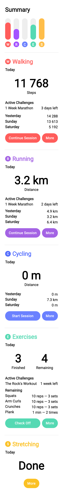
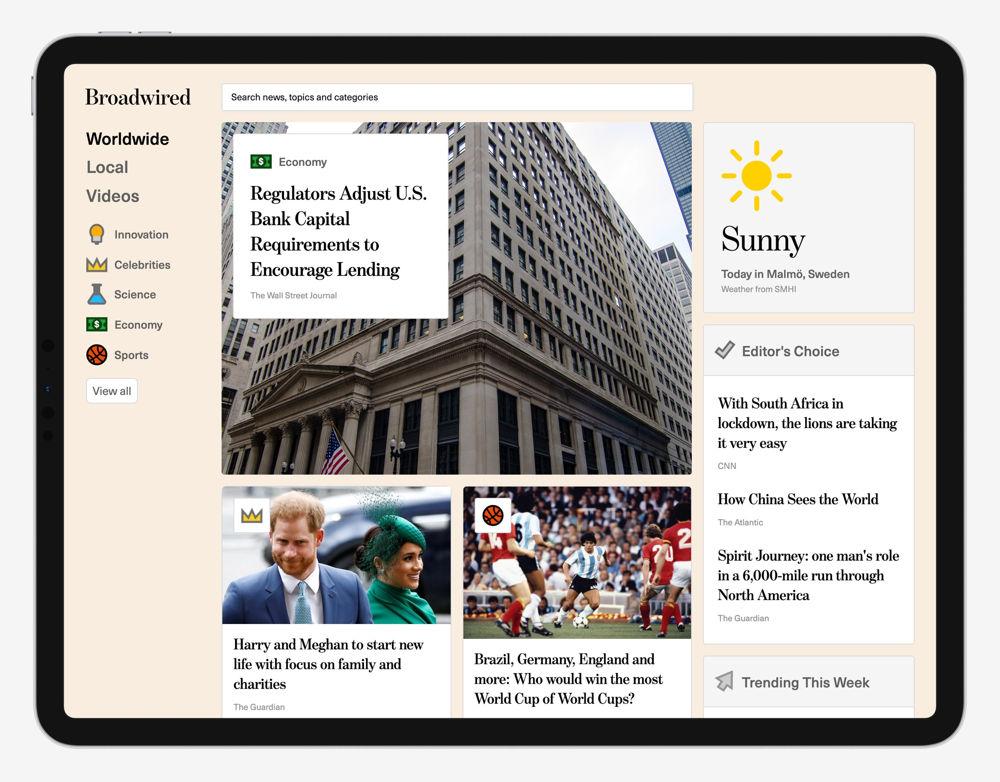
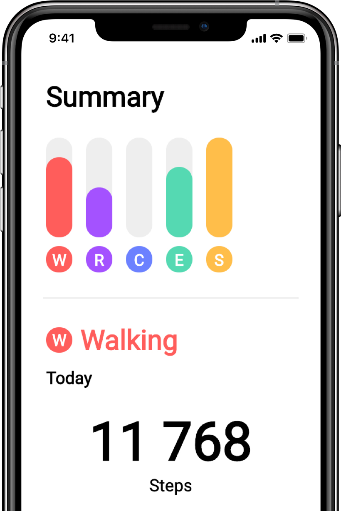
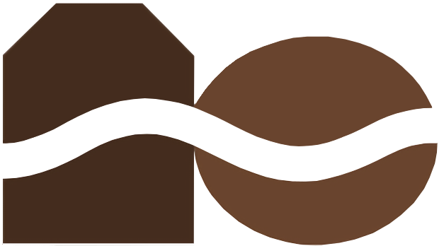

Hello I'm
Jacob Lundell
I'm a Swedish freelance designer and front-end developer working with the visual design and user experience of websites, web applications and apps. I also help shape the brand identity of such
projects with graphic designs — this includes logos, icons and marketing material.
Send me an email
Connect with me
Try scrolling



View Tempo
Try the demo!

View Broadwired
Check it out!

Created for a startup called Bagged & Beaned which makes coffee bags. Never heard of coffee bags? I don't blame you, it's a fairly new concept that uses teabag-like packaging for coffee.
I love these fonts
Swipe
Cover photos
I made for them

I made for them
Swipe